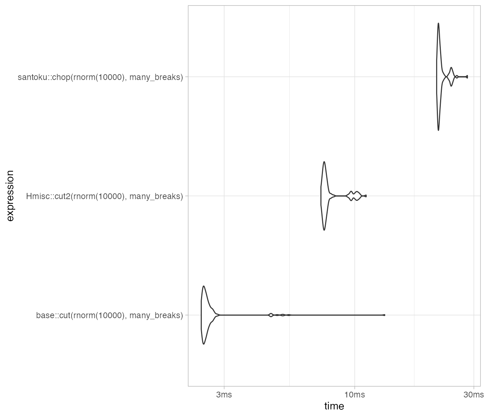

vignettes/website-articles/performance.Rmd
performance.RmdThe core of santoku is written in C++. It is reasonably fast:
packageVersion("santoku")
#> [1] '0.1.0'
mb <- microbenchmark::microbenchmark(
santoku::chop(rnorm(1e5), -2:2),
cut(rnorm(1e5), -2:2),
Hmisc::cut2(rnorm(1e5), -2:2)
)
mb
#> Unit: milliseconds
#> expr min lq mean median
#> santoku::chop(rnorm(1e+05), -2:2) 14.33866 16.28604 18.62292 17.08351
#> cut(rnorm(1e+05), -2:2) 10.30612 11.47117 13.80088 11.74731
#> Hmisc::cut2(rnorm(1e+05), -2:2) 31.90659 34.86061 56.76364 36.16675
#> uq max neval cld
#> 18.11674 118.9050 100 a
#> 12.31584 156.0294 100 a
#> 39.00296 1592.8724 100 bggplot2::autoplot(mb) + ggplot2::theme_light()
#> Coordinate system already present. Adding new coordinate system, which will replace the existing one.